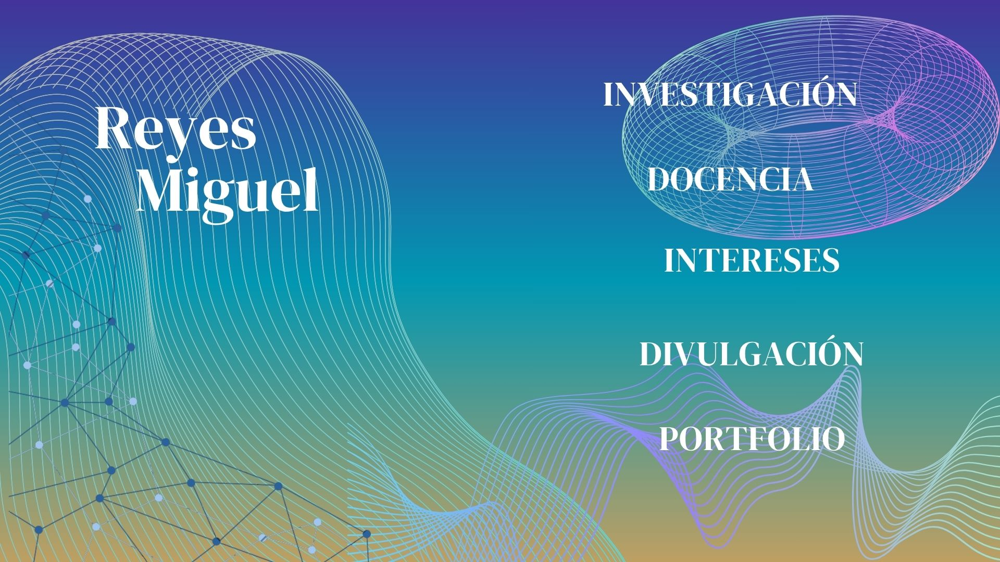

Reyes Miguel · Investigación, docencia, intereses, divulgación y portfolio

Investigación Docencia Intereses Divulgación PortfolioPortada original de Canva · Red de nodos y curvas animadas · Seleccioná un título para ingresar a su sección
Un espacio interdisciplinario
Ideas que se
conectan.
Docencia, investigación, programación y comunicación científica. Recorré las distintas áreas del sitio y encontrá materiales, proyectos y futuras publicaciones.
01 / INVESTIGACIÓN↗
Research
Salud computacional, aprendizaje automático e imágenes médicas.
02 / DOCENCIA↗Teaching
Materiales docentes en PDF, apuntes y presentaciones.
03 / INTERESES↗Temas de interés
Matemática aplicada, redes, grafos e inteligencia artificial.
04 / DIVULGACIÓN↗Divulgación
Ciencia accesible, recursos y encuentros con la comunidad.
05 / PROYECTOS↗Portfolio
Desarrollos tecnológicos y proyectos interdisciplinarios.
06 / TRAYECTORIA↗CV & publicaciones
Perfil profesional, publicaciones y ponencias.
Conectar conceptos. Explorar redes. Comunicar conocimiento.
Colaboraciones ↗